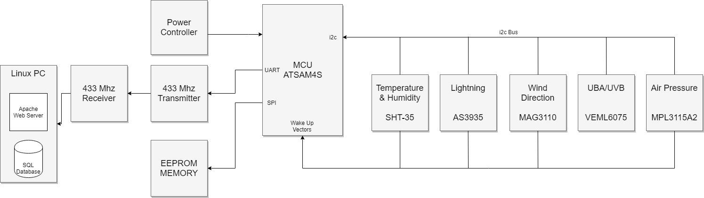
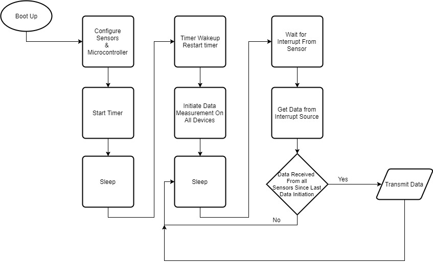

Weather station
Description
This project details how to build an outdoor weather station that can sense humidity, temperature, air pressure, lightning strike and storm front distance and UVA/UVB intensity. The sensors all operate on a single i2c bus. It will be powered by solar voltaic cells and battery. The weather station will transmit over a 433Mhz link where data will be receieved and recorded to a database.
I will make the full project available as well as each individual sensor when complete
Pictures


Block Diagram
Software flow

Lightning SensorView Schematic Gerber Download  Download BOM Download C Library |
Altimeter SensorView Schematic Gerber Download  Download BOM Download C Library |
UV SensorView Schematic Gerber Download  Download BOM Download C Library |
Temperature and Humidity SensorView Schematic Gerber Download  Download BOM Download C Library |
The following code will send output over UART as shown in the picture below. Since it's the end of winter and there haven't been any thunderstorms, I have yet to test the lightning detection library.

/* * WeatherStation.c * * Created: 3/3/2018 5:16:00 AM * Author : robert */ #include "sam.h" #include "i2c.h" #include "basic_uart.h" #include "systemclock.h" #include "MPL3115A2_Pressure.h" #include "AS3935.h" #include "UV.h" #include "SHT35_HUMIDITY.h" uint32_t counter = 0; // counter for TC0 void timerInit(){ //Setup for TC0 - ID 23, TIOA0 - PA0 peripheral B //enable interrupts in NVIC for TC0 NVIC_EnableIRQ(TC0_IRQn); //PMC setup REG_PMC_PCER0 |= PMC_PCER0_PID23; //enable peripheral clock for timer counter channel0 //Interrupt Setup REG_TC0_CMR0 |= TC_CMR_TCCLKS_TIMER_CLOCK1; //mainclock div 2 REG_TC0_IER0 |= TC_IER_COVFS; //enable couter overflow interrupt REG_TC0_CCR0 |= TC_CCR_CLKEN; //enable tc clock //PIO setup (not neccessary) because we won't use the pins } void GPIO_InterruptInit(uint8_t pinNumber){ //lightning sensor is normally low, pulses high on interrupt //enable clock for PIOA REG_PMC_PCER0 |= PMC_PCER0_PID11; //set PA24 as controllable by the PIO controller (disable peripheral) REG_PIOA_PER |= PIO_PER_P24; //output disable register (set as input for button) REG_PIOA_ODR |= PIO_ODR_P24; //pin pull down REG_PIOA_PUDR |= PIO_PUDR_P24; REG_PIOA_PPDER |= PIO_PPDER_P24; //enable glitch filter on PA24 (button debounce) REG_PIOA_IFER |= PIO_IFER_P24; //Read ISR so that it clears any interrupt flags that might be there uint32_t temp = REG_PIOA_ISR; //enable input change interrupt on PA24 REG_PIOA_IER |= PIO_IER_P24; //enable additional modes of interrupt REG_PIOA_AIMER |= PIO_AIMMR_P24; //edge not level REG_PIOA_ESR |= PIO_ESR_P24; //polarity - rising not fallig REG_PIOA_REHLSR |= PIO_REHLSR_P24; //enable PIOA interrupts NVIC_EnableIRQ(PIOA_IRQn); } int main(void) { /* Initialize the SAM system */ //initialize SAM4S SystemInit(); clock_init(); UART_Init(); i2c_init(); timerInit(); printString("ATSAM4S Initialized"); printString("\r\n"); //disable watchdog until there is a tickle timer REG_WDT_MR |= WDT_MR_WDDIS; //initialize i2c components //lightning sensor GPIO_InterruptInit(0); //create interrupt for AS3935 to interrupt on lightning detect init_AS3935(); //UV sensor VEML6075_init (INTEGRATION_TIME_400ms, HIGH_DYNAMIC_OFF, MODE_NORMAL); //Temperture Sensor SHT35_sendCommand(SHT35_CLK_STRETCH_EN_H); //one shot, clock stretch enabled //Pressure Sensor MPL3115_Poll_init(); printString("i2c Components Initialized"); printString("\r\n"); //start our TC0 REG_TC0_CCR0 |= TC_CCR_SWTRG; printString("Timer Started"); printString("\r\n"); MPL3115_startMeasurement(); /* Replace with your application code */ while (1) { } } void TC0_Handler(void){ uint32_t environmentRawData = 0; uint32_t status = REG_TC0_SR0; //read status register - this clears interrupt flags if ((status & TC_SR_COVFS)>=1){ //increment counter counter+=1; //printByte(counter); } if (counter>4560){ //152 is ~ 1 second //reset counter counter=0; //Run Code //UV sensor printString("UV Sensor Data: \r\n"); printString("UVA: "); printWord(readUVA()); printString("\r\n"); printString("UVB: "); printWord(readUVB()); printString("\r\n"); printString("Light: "); printWord(readcompensation1()); printString("\r\n"); printString("IR: "); printWord(readcompensation2()); printString("\r\n"); //temperature Sensor environmentRawData = SHT35_readData(); printString ("SHT35 Humidity Sensor Data:\r\n"); printString("temp raw: "); printWord(environmentRawData >> 16); printString("\r\n"); printString("humid raw: "); printWord(environmentRawData); printString("\r\n"); printString("TºC: "); printByte( SHT35_calcTemp((environmentRawData & SHT35_TEMPERATURE_MASK)>> 16)); printString("\r\n"); printString("RH%: "); printByte( SHT35_calcHumid((environmentRawData & SHT35_HUMIDITY_MASK))); printString("\r\n"); SHT35_sendCommand(SHT35_CLK_STRETCH_EN_H); //one shot, clock stretch enabled //Pressure Sensor MPL3115_getAllData(); MPL3115_startMeasurement(); printString("MPL3115A2 Pressure Sensor Data:\r\n"); print32Bit(data.pressure); printString("."); printFraction(data.pressureFraction); printString("Pascals \r\n"); //printString("\r\n"); //printBinaryByte(data.pressureFraction); print32Bit(data.temperature); printString("."); printFraction(data.temperatureFraction); printString("ºC\r\n"); //printBinaryByte(data.temperatureFraction); } } void PIOA_Handler(void) { // reading PIOA_ISR will clear interrupt flags uint32_t status = REG_PIOA_ISR; uint8_t interruptStatus; if ((status & PIO_ISR_P24) >= 1){ //pin change interrupt on P24 //frequencyCounter++; interruptStatus = getInterrupts(); if ((interruptStatus & INTERRUPT_LIGHTNING) == INTERRUPT_LIGHTNING){ printString ("Distance: "); printByte(getLightningDistance()); printString ("\r\n"); } if ((interruptStatus & INTERRUPT_DISTURBER)== INTERRUPT_DISTURBER){ printString ("Disturber \r\n"); } if ((interruptStatus & INTERRUPT_NOISE) == INTERRUPT_NOISE){ //increase noise floor printString ("Noise \r\n"); } } }